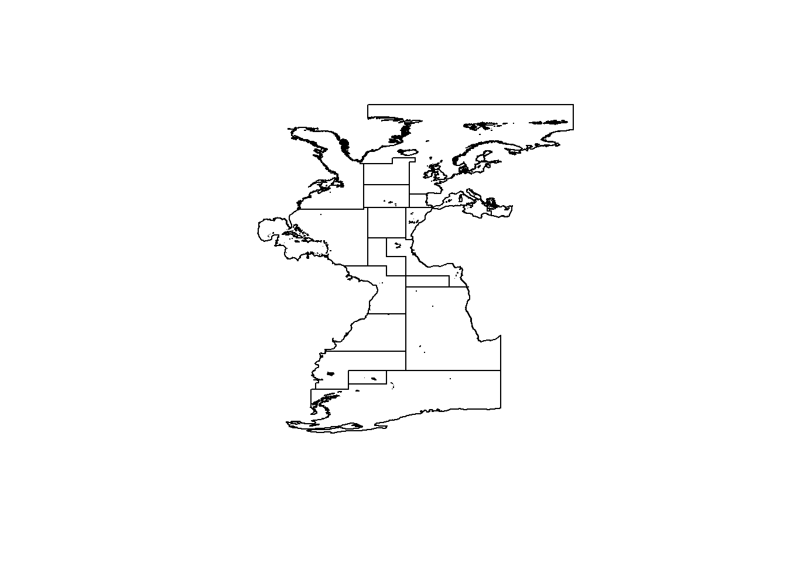
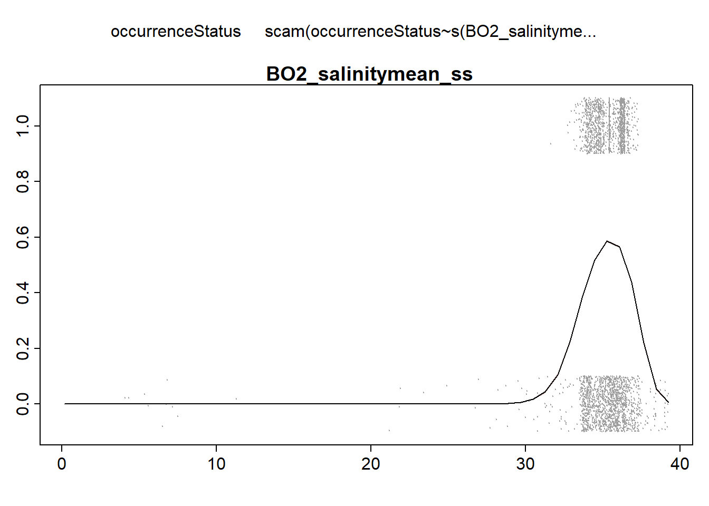

Chapter 6 Shape Constrained-Generalized Additive Models
In order to fit SDM in agreement with the ecological niche theory, the proposed shape-constrained GAMs in (Citores et al. 2020) are fitted in this section. SC-GAMs are based on generalized additive models, allowing us to impose shape-constraints to the linear predictor function. The R package SCAM implements the general framework developed by Pya (2014) using shape-constrained P-splines. Monotonicity and concavity/convexity constraints can be imposed on the sign of the first and/or the second derivatives of the smooth terms. For fitting species distribution models in agreement with the ecological niche theory, we imposed concavity constraints (\(f''(x) \le 0\)), so that the response can presents at most a single mode.
Alternatively, the R package mboost fits SC-GAMs using boosting methodos. This alternative won’t be further developed here.
First we load all required libraries.
library(scam)
library(plotmo)
library(rgdal)
library(ggplot2)
library(dplyr)
library(fields)
library(maps)
library(raster)
library(RColorBrewer)
library(SDMTools)
library(dismo)
library(stringr)
library(rstudioapi)6.1 Model fit
We set the working directory to the folder where the current script is located and we load the dataset (PAdata_with_env.Rdata) containing the presence-absence data toghether with the environmental data.
setwd(dirname(getSourceEditorContext()$path))
load(file.path ("data", "outputs_for_modelling", "PAdata_with_env.Rdata"))To fit a logistic regression model in the SC-GAMs framework, we use the scam function, where we set the binomial family with the logit link function. Our response variable is the presence-absence data and the the selected three explanatory variables are the SST, chlorophyll and salinity. Each variable is included in the model through an spline function where the concavity constraint is set using bs=“cv”. The details about this option can be found in the section “Constructor for concave P-splines in SCAMs” of the SCAM manual (https://cran.r-project.org/web/packages/scam/scam.pdf). The number of knots (k) is fixed at 8 in this example for a good balance between flexibility and computation time.
UNIVARIATE MODELS
Before fitting the model with the selected three environmental variables, we can fit univariate model as follows.
We fit the univariate model for SST, we print the summary of the model fit, and look at the fitted curve in the response scale.
model_sst <- scam (occurrenceStatus ~ s(BO_sstmean, k=8,bs="cv"), family=binomial(link="logit"), data=data)
summary(model_sst)##
## Family: binomial
## Link function: logit
##
## Formula:
## occurrenceStatus ~ s(BO_sstmean, k = 8, bs = "cv")
##
## Parametric coefficients:
## Estimate Std. Error z value Pr(>|z|)
## (Intercept) -50.157 2.314 -21.67 <2e-16 ***
## ---
## Signif. codes: 0 '***' 0.001 '**' 0.01 '*' 0.05 '.' 0.1 ' ' 1
##
## Approximate significance of smooth terms:
## edf Ref.df Chi.sq p-value
## s(BO_sstmean) 2 2 1074 <2e-16 ***
## ---
## Signif. codes: 0 '***' 0.001 '**' 0.01 '*' 0.05 '.' 0.1 ' ' 1
##
## R-sq.(adj) = 0.2557 Deviance explained = 22.7%
## UBRE score = 0.071818 Scale est. = 1 n = 29435plotmo(model_sst,level = 0.95, pt.col=8)
We repeat the same for the rest of the variables.
model_chl <- scam (occurrenceStatus ~ s(BO2_chlomean_ss, k=8,bs="cv"), family=binomial(link="logit"), data=data)
summary(model_chl)##
## Family: binomial
## Link function: logit
##
## Formula:
## occurrenceStatus ~ s(BO2_chlomean_ss, k = 8, bs = "cv")
##
## Parametric coefficients:
## Estimate Std. Error z value Pr(>|z|)
## (Intercept) -2.39800 0.04194 -57.18 <2e-16 ***
## ---
## Signif. codes: 0 '***' 0.001 '**' 0.01 '*' 0.05 '.' 0.1 ' ' 1
##
## Approximate significance of smooth terms:
## edf Ref.df Chi.sq p-value
## s(BO2_chlomean_ss) 1 1 3216 <2e-16 ***
## ---
## Signif. codes: 0 '***' 0.001 '**' 0.01 '*' 0.05 '.' 0.1 ' ' 1
##
## R-sq.(adj) = 0.1466 Deviance explained = 11.6%
## UBRE score = 0.22512 Scale est. = 1 n = 29431plotmo(model_chl,level = 0.95, pt.col=8)
Due to convergence issues, sometimes it is necessary to fix the smoothing parameter (sp) at \(10^{-5}\), as here when introducing salinity as an explanatory variable. If no value is provided, the smoothing parameter is estimated within the model.
model_sal <- scam (occurrenceStatus ~ s(BO2_salinitymean_ss, k=8,bs="cv"), family=binomial(link="logit"), data=data,sp=0.00001)
summary(model_sal)##
## Family: binomial
## Link function: logit
##
## Formula:
## occurrenceStatus ~ s(BO2_salinitymean_ss, k = 8, bs = "cv")
##
## Parametric coefficients:
## Estimate Std. Error z value Pr(>|z|)
## (Intercept) -35.903 1.477 -24.31 <2e-16 ***
## ---
## Signif. codes: 0 '***' 0.001 '**' 0.01 '*' 0.05 '.' 0.1 ' ' 1
##
## Approximate significance of smooth terms:
## edf Ref.df Chi.sq p-value
## s(BO2_salinitymean_ss) 2 2.001 764.1 <2e-16 ***
## ---
## Signif. codes: 0 '***' 0.001 '**' 0.01 '*' 0.05 '.' 0.1 ' ' 1
##
## R-sq.(adj) = 0.0394 Deviance explained = 3.45%
## Scale est. = 1 n = 29431plotmo(model_sal,level = 0.95, pt.col=8)
MODEL WITH ALL VARIABLES
Now we fit the model including the three selected variables.
model <- scam (occurrenceStatus ~ s(BO_sstmean, k=8,bs="cv")+ s(BO2_salinitymean_ss, k=8,bs="cv")+s(BO2_chlomean_ss, k=8,bs="cv"), family=binomial(link="logit"), data=data,sp=rep(0.00001,3))
summary(model)##
## Family: binomial
## Link function: logit
##
## Formula:
## occurrenceStatus ~ s(BO_sstmean, k = 8, bs = "cv") + s(BO2_salinitymean_ss,
## k = 8, bs = "cv") + s(BO2_chlomean_ss, k = 8, bs = "cv")
##
## Parametric coefficients:
## Estimate Std. Error z value Pr(>|z|)
## (Intercept) -58.99 50.82 -1.161 0.246
##
## Approximate significance of smooth terms:
## edf Ref.df Chi.sq p-value
## s(BO_sstmean) 3.927 3.999 771.3 <2e-16 ***
## s(BO2_salinitymean_ss) 2.005 2.010 187.0 <2e-16 ***
## s(BO2_chlomean_ss) 3.008 3.016 1855.4 <2e-16 ***
## ---
## Signif. codes: 0 '***' 0.001 '**' 0.01 '*' 0.05 '.' 0.1 ' ' 1
##
## R-sq.(adj) = 0.3474 Deviance explained = 31.8%
## Scale est. = 1 n = 29431plotmo(model,level = 0.95, pt.col=8)## plotmo grid: BO_sstmean BO2_salinitymean_ss BO2_chlomean_ss
## 18.92675 35.42666 0.2354473
We can see in the summary of the fit, that all included variables are statistically significant (with p<0.05) and present a unimodal response curve.
For a more detailed check of the fitting, we can use the scam.check function:
scam.check(model)
##
## Method: UBRE Optimizer: NA
## The optimal smoothing parameter(s): 1e-05 1e-05 1e-05 .Finally, we save the model.
selected_model<-model
save(list=c("selected_model"), file = ("models/model.RData"))6.2 Model selection
When several expalanotry variables are available, a variable selection process can be carried out. Here we provide a function to perform forward variable selection (modsel.scam) based on the significance of variables and AIC values of the fits.
source("function/function_scam_selection_optimized.R")We save the names of the variables we want to introduce for the variable selection process as a vector:
vars <- c("BO_sstmean",
"BO2_salinitymean_ss",
"BO2_chlomean_ss")The default AIC tolerance is 2 and there is not a limit on selected terms in this example. These options can be modified through aic.tol and vmax arguments in the function. The number of knots and the sp can be also modified.
model_SCGAM <- try(modsel.scam(basef="occurrenceStatus ~ 1", vars=vars, dat=data,sp=0.00001), silent=T)## [1] "Fitting models with 1 terms"
## occurrenceStatus ~ 1+s(BO_sstmean,m=2,bs='cv',k=8)
## occurrenceStatus ~ 1+s(BO2_salinitymean_ss,m=2,bs='cv',k=8)
## occurrenceStatus ~ 1+s(BO2_chlomean_ss,m=2,bs='cv',k=8)
## [1] "Fitting models with 2 terms"
## occurrenceStatus ~ 1+s(BO_sstmean,m=2,bs='cv',k=8)+s(BO2_salinitymean_ss,m=2,bs='cv',k=8)
## occurrenceStatus ~ 1+s(BO_sstmean,m=2,bs='cv',k=8)+s(BO2_chlomean_ss,m=2,bs='cv',k=8)
## [1] "Fitting models with 3 terms"
## occurrenceStatus ~ 1+s(BO_sstmean,m=2,bs='cv',k=8)+s(BO2_chlomean_ss,m=2,bs='cv',k=8)+s(BO2_salinitymean_ss,m=2,bs='cv',k=8)We check results of the selected model:
model_SCGAM$svars
sapply(model_SCGAM$smod, AIC)
sapply(model_SCGAM$smod, function(x) summary(x)$dev.expl)
lapply(model_SCGAM$smod, formula)
lapply(model_SCGAM$smod, summary)
#Select the last model of the list which is the best model according to AIC and plevel criteria
selected_model <- model_SCGAM$smod[[length(model_SCGAM$smod)]]
selected_model$sp
# see specifically the summary and the plots of the final model after the selection
# note that it is the last element of the list of models
summary(selected_model)
scam.check(selected_model)
plot(selected_model)
plotmo(selected_model,level = 0.95, pt.col=8)
# Save the model
#save(selected_model, file = "models/selected_model.RData")